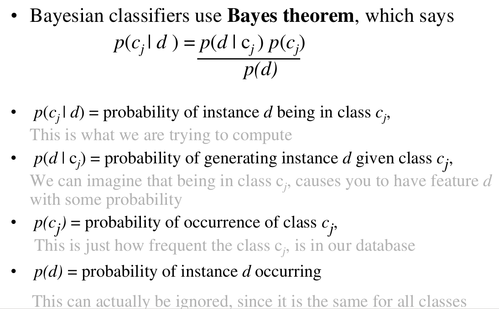
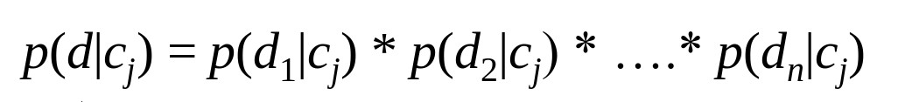

Glimpse Of The Naive Bayes' Classifier

The are numerous applications of machine learning out in the world and many more are being developed, I particularly like the clustering algorithms. In this post I would like to explore one of the most useful of supervised clustering algorithm, The Naive Bayes' Classifier.
In the post I will be using an example project that I am working upon as the default example. So what does the algorithm do. In simple words it computes the probabilities of the the test case to lie in one of "clusters" with a specific probablity. Let me go with the example to describe at what we are trying to achieve.
Problem: Given an input paragraph we need to classify it as Argumentative, Narrative, Expository or Descriptive
Solution:
- Training SetCollected the training data set of different paragraphs already classified already in the given four categories.
- Feature Extraction We Extract the features from the training database to generate a feature vector for each ith point in the training dataset, this in our case are language features.
- Supervised Clustering Algorithm(Naive Bayes')This is what the tutorial is about, we need to make four clusters(one for each para type) in the feature vector space. And this is what we will talk about in the tutorial.
- Input Result This is the moment of truth we put in few known test cases we get their probablities of lying in the clusters and see the accuracy of our algorithm, based on these results we decide on the modification that might be required in the training dataset.
So let's first go through what the Bayesian approach of classification!

Now, you might be thinking yeah this makes sense we take the classes in our example as the types of pragraphs and the data being the input. But we cannot input an paragraph we input a set of featurs which makes d a vector. So the next thing we look at is how to deal with the multidimentional input, that is like in our case a number of features.
There are many methods to approach this problem, but one of the most simple being is that we assume that each feature have an independent distribution (or is Naive). In our example the features we are likely to choose are something like, "number of certain puntuation per total words","number of stress adjectives per total words","average sentence length" etc. What we notice is that these all intutively are more or less not dependent on each other, there will be few dependencies obviously but nothing that we can't ignore :P. To summerize we have the probablities expressed as.

This settles the defining of our model and this is what the Naive Bayes' Classifier is. Now we just need to predict the probability distribution of the features, this is usually chosen to be a gaussian model with some w=varying parameter, we need to tune the parameter using some kind of techniques like maximum liklihood estimation. For more insight on this topic I suggect you have a look at few youtube videos which are really amazing, one such short explanation is given here.
Lets put this tutorial to test, I have four clusters and many features for classifying the paragraphs, the project is still ongoing and will get finished real soon, the github repo can be found here Paragraph Classification
Finally let us discuss the advantages and limitations of this classifier ADVANTAGES
- Fast to train. Fast to classify.
- Not sensitive to irrelevant features.
- Handles real as well as discrete data.
- Handles data streaming well.
- Assumes independence of features and hence it does not capture the mutual dependence of features which might be present.
This concludes this really brief introduction! Thank You!